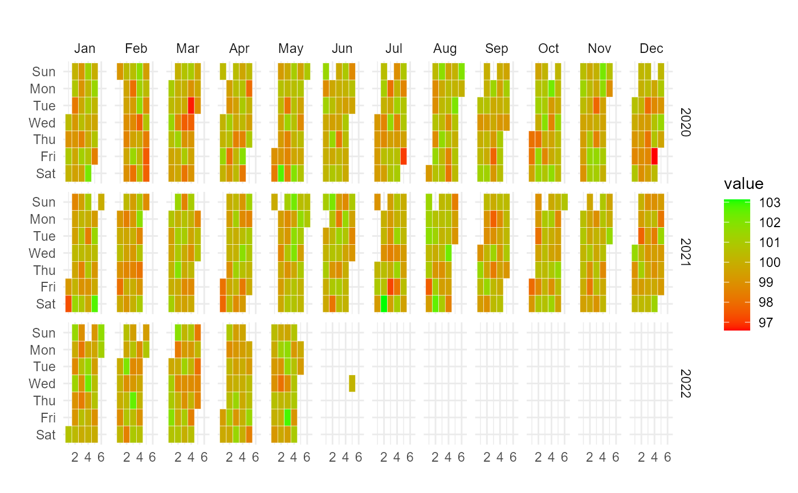

Takes in data that has been aggregated to the day level and makes a calendar heatmap.
ts_calendar_heatmap_plot(
.data,
.date_col,
.value_col,
.low = "red",
.high = "green",
.plt_title = "",
.interactive = TRUE
)The time-series data with a date column and value column.
The column that has the datetime values
The column that has the values
The color for the low value, must be quoted like "red". The default is "red"
The color for the high value, must be quoted like "green". The default is "green"
The title of the plot
Default is TRUE to get an interactive plot using plotly::ggplotly().
It can be set to FALSE to get a ggplot plot.
A ggplot2 plot or if interactive a plotly plot
The data provided must have been aggregated to the day level, if not funky output could result and it is possible nothing will be output but errors. There must be a date column and a value column, those are the only items required for this function to work.
This function is intentionally inflexible, it complains more and does less in order to force the user to supply a clean data-set.
data_tbl <- data.frame(
date_col = seq.Date(
from = as.Date("2020-01-01"),
to = as.Date("2022-06-01"),
length.out = 365*2 + 180
),
value = rnorm(365*2+180, mean = 100)
)
ts_calendar_heatmap_plot(
.data = data_tbl
, .date_col = date_col
, .value_col = value
, .interactive = FALSE
)
